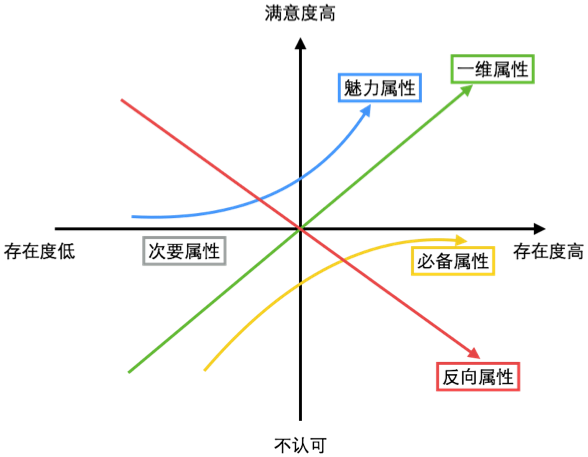
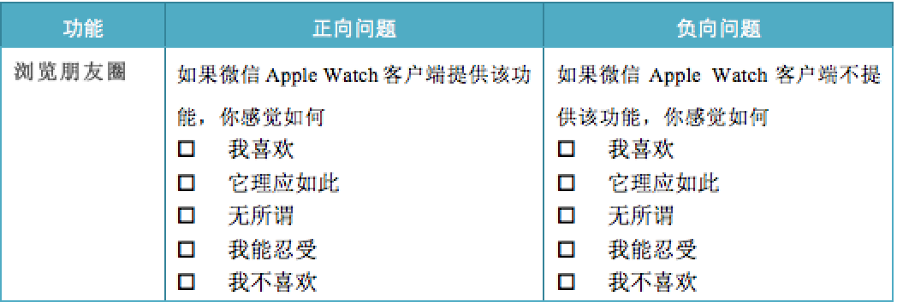
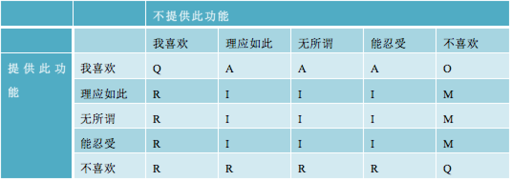

Kano模型在Apple Watch第三方客户端需求分析中的应用
——以微信Apple Watch客户端功能需求为例
摘要
Apple Watch的出现，为第三方应用开发者创造了一个全新的市场，如何在这个全新的领域中做出用户体验较好的产品，就必须对用户在Apple Watch中的功能需求进行深入的用户调研。Kano模型作为一种简单易行的识别产品特征或产品功能性概念类别划分的技术，在产品设计领域的应用非常广泛。本文以微信Apple Watch客户端为例，介绍其在Apple Watch这个全新的应用市场中得用户研究中的应用。通过研究kano模型的理论基础和实际应用的执行过程后，挖掘出kano模型在产品需求调研阶段的应用以挖掘用户内心真实需求，确认产品需求优先级，提升用户体验满意度。
关键词: kano模型,需求研究,用户研究,移动应用,用户体验
第一章 Kano模型概述
1.1.Kano模型起源
著名市场营销学大师、美国西北大学教授菲利普•科特勒说过：满意是指一个人通过对一个产品的可感知的效果与他的期望值相比较后，所形成的愉悦或失望的感觉状态。在竞争日益激烈的当下，用户的满意度直接影响着用户对于产品的忠诚度，进而影响用户的粘性和流失。正因如此，每个产品，都想了解自己用户的满意度状况，从而制定后续的策略和规划。
在传统的观念里，会认为满意的反面就是不满意。然而赫兹伯格（1974）在研究员工满意度时提出了双因素理论（也被称作激励-保健理论），他认为满意与不满意并不是存共同存在一个单一的连续体，而是分开的。即满意和不满意不是二选一的关系，满意的反面是没有满意，而不满意的反面是没有不满意。所以令人满意的因素即使被去除，并不一定会导致员工的不满意。同样的，让人感到不满的因素被去掉，也不一定会导致员工满意。
1.2.Kano模型的基本原理
受行为科学赫兹伯格双因素理论的启发,东京理工大学教授狩野纪昭(NoriakiKano)和他的同事FulninTakahashi于1979年10月发表了《质量的保健因素和激励因素》(MotivatorandHygieneFactorinQuallty)一文,第一次将满意与没有满意标准引入到质量管理领域,并于1982年NipponQCGakka第12届年会上宣读了《魅力质量与必备质量》(AttraetiveQualityandMust一beQuality)的研究报告,该论文于1984年1月18日正式发表在《日本质量控制协会》(Japanese soeietyQualityControl)杂志总14期上,标志着狩野模式(Kanomodel)的确立和魅力质量理论的成熟。
在对质量特性满足状况和客户满意之间的关系的深入分析的基础上,KANO博士将质量要素分为五类：分别是“魅力属性”、“必备属性”、“一维属性”、“无差异属性”、“反向属性”。其关系如图所示，图示纵坐标代表用户满意度，越向上越满意，越向下越不满意；横坐标代表某项功能存在程度，越向右代表存在程度越高，越向左代表该功能的存在程度越低。
魅力属性：魅力属性被描述为能够给顾客带来惊喜或意外收获的特性，它得到充分满足时，能够大大提高顾客满意度，得不到充分满足时也不会引起太多的不满意，这一类属性往往是产品宣传的独特卖点。
必备属性：必备属性是理所当然的属性要求，当这些特性充分满足时的产品才算合格，得不到充分满足时会引起顾客的不满。例如：用户使用应用，如果应用正常运行，顾客不会为此而对应用体验感到满意；反之，一旦应用出现问题，无法正常运行，那么顾客对该应用体验的满意水平则会明显下降，吐槽抱怨随之而来。
一维属性：也称为线性属性或期望属性，一维属性充分满足时会导致满意，得不到充分满足时会引起不满，也就是说，顾客的满意程度与产品的一维属性呈线性相关关系，它们是企业间竞争最激烈的质量特性。
无差异属性：是用户不关注的属性，无论提供与否，用户满意度都不会受其影响，它们的满足与否不会导致用户满意或不满意。
逆向属性：指此属性要素充足时反而引起用户不满，不充足时用户感到满意。
Kano模型对于企业的实际操作意义在于：开发者通过对这类属性的区分，应当重点关注魅力属性、必备属性和一维属性，避免逆向属性，忽略无差异属性，从而将公司有限的资源投入到更有效的领域中去。
另一方面，在产品开发过程中，产品的功能和质量属性要解决的问题本质上是用户需求，因此可以利用Kano模型对用户需求加以分析，形成对应的5类需求属性：即魅力需求属性、必备需求属性、一维需求属性、无差异需求属性和逆向需求属性，根据不同的需求属性确立不同的产品功能和开发目的。
第二章 案例分析
2.1 研究背景
Apple Watch是2014年苹果公司秋季产品发布会上公布的智能可穿戴设备。作为一款和用户最贴身的设备，开发者需要根据设备硬件特点，根据使用情境打造足够吸引用户的Apple Watch应用。根据苹果公司官方发布的Apple Watch界面设计规范，总结其主体思想主要如下：
- 个人。Apple Watch是面向穿戴而设计的，所以其UI需要与佩戴者自身相协调。
- 整体。Apple Watch旨在使硬件与软件的边界更加模糊。数码表冠是经过精心打造的实体控件，帮助用户在软件当中进行精巧的导航操作。
- 轻量。Apple Watch应用在设计上要注重快速、轻量的交互流程，并充分利用屏幕显示空间及其位于手腕位置的这一重要特性。出于隐私和可用性方面的考虑，界面当中信息的获取和移除方式都应该是非常快捷的。
目前，为Apple Watch虽然还未上市，但是软件开发商开始针对Apple Watch设计了一系列概念稿。而作为扩展iPhone的第二块屏幕，Apple Watch这块小屏幕上究竟适合扩展或延伸手机应用的什么功能，这些功能哪些更加贴合用户需求，哪些功能优先级最高需要使用用户研究的方式对各个功能进行评估，区分功能性质及开发的优先级，确定在众多被提出的功能中，哪些对于用户来说是期望功能，哪些是必备功能，哪些是无差异功能。从而在产品设计的初期，结合实际用户需求，确定哪些功能应该在应用发布时就需要推出，哪些适合在后期迭代版本中完善。
经过对微信iPhone客户端总结功能总结，结合Apple Watch硬件设备与iPhone相比无虚拟键盘、无摄像头的特点，一些基于键盘输入及摄像头识别的功能则无法在Apple Watch上实现，因此对此类功能删减后确认需调研的功能如下:
- 语音聊天
- 发送表情
- 发送本地图片
- 发送收藏的内容
- 共享位置信息
- 发送好友名片
- 通过语音输入方式发送文字消息
- 实时对讲机
- 发起群聊
- 通过本地图片扫码
- 添加手机联系人/QQ好友为微信好友
- 浏览朋友圈
- 发动态到朋友圈
- 摇一摇添加好友
- 摇一摇搜索歌曲
- 漂流瓶
- 游戏下载入口
- 转账给朋友
- 钱包（充值/提现）
2.2 研究方法
Kano模型指出：应该从用户的主观感受与产品的功能这两个维度认知产品的功能和用户满意度，进而获取用户满意程度与产品功能之间的非线性关系，Kano模型通过把产品的具体功能转化成用户满意度，依据不同产品功能带来的用户满意程度，将这些功能和功能属性加以区分，以指导开发者决策。
2.3 研究过程
为了能够将用户的功能需求区分为必备属性、一维属性、魅力属性、无差异属性、反向属性等不同属性，Kano模型中的评价问卷是由正向和负向两个问题构成，分别测量用户在面对满足或不满足某项功能需求时所作出的态度评价Kano评价问卷中的问题答案采用五级选项，分别是”我喜欢”、“它理应如此”、“我无所谓”、“我能够忍受”、“我不喜欢”。
Kano评价问卷的问题形式如下表1所示。

为了保证问卷回收质量，需从以下几个基本方面进行完善考虑：
- 筛选产品目标用户。调研的用户要求是此应用的目标用户（年龄，爱好等）和硬件需求，即是智能手机和移动互联网的中高级用户，同时对可穿戴硬件设备具有一定的了解。
- 问卷选项表意注释。为了防止问卷受访用户对于“我很喜欢”“理应如此”“无所谓”“能忍受”“我不喜欢”的理解差异，在问卷填写前给出统一解释说明，让用户有相对统一的标准。如：“我喜欢”：指让您感到满意开心、令人惊喜的；“它理应如此”：指您认为是应该的，必须的；“无所谓”：指您不会特别在意，可有可无；“我能忍受”：指您不至于喜欢，但还可以接受；“我不喜欢”：指让您感到不满意。
- 由于Apple Watch这一设备目前还未上市(文写于2014年12月)，由于没有此设备的使用经验及深入了解，因此在进行问卷设计的时候需要对一些功能点进行图片模拟说明其交互效果，从而方便用户建立一个初步的对Apple Watch的认知模型辅助其对功能操作及使用方式的了解。
功能12：浏览朋友圈
在浏览朋友圈时，可以使用Taptic Engine旋动实体旋钮浏览朋友状态。
2.4 数据收集和分析
数据分析主要方法为“Kano二维属性归类”和“Better-worse系数分析”。
2.4.1Kano二维属性归类
Kano博士和他的同事们提出的二维属性模型中表示：当某种质量属性具备时,用户未必会感到满足,而当该种质量属性不具备的时候,则有可能造成不满足或其他情况。根据以上设计的问卷实施调查，按照正向问题和负向问题的回答对需求属性进行分类，具体分类对照见下表3。
当正向问题的回答是“我喜欢”，对负向问题的回答是“我不喜欢”，那么在Kano评价表中，这项需求属性就分类为O，即一维属性。
当正向问题的回答是“我喜欢”，对负向问题的回答是“它理应如此”、“我无所谓”或“我能忍受”，那么这项需求属性就分类为A，即魅力属性。
当负向问题的回答是“我不喜欢”，而对正向问题的回答是“它理应如此”、“我无所谓”或“我能忍受”，那么这项需求属性就分类为M，即必备属性。
而无论该功能是否具备，感受都为“理应如此”、“无所谓”、“我能忍受”则是中间部分的“无差异属性”，标记为I；
若具备时感觉“理应如此”、“无所谓”、“能忍受”、“不喜欢”，而不具备时感受为“喜欢”、“理应如此”、“无所谓”、“能忍受”，则说明这一因素的存在程度和用户满意度呈反向关系，称为“反向属性”，标记为R。
Q表示有疑问的结果，用户的回答一般不会出现这个结果，除非这个问题的问法不合理，或者是用户没有很好地理解问题，或者是用户在填写问题答案时出现错误。
每个功能再六个维度上都可能有得分，将相同维度的比例相加后，可得到各个属性维度的占比总和，总和最大的一个维度便是该功能的属性分类。
下表为微信Apple Watch客户端功能需求属性统计分类：
2.4.2 Better-worse 系数分析
在 Kano 属性归类的探讨之外,还可以通过对于功能属性归类的百分比得出某功能可以增加满意或者消除不满意的程度, 这种方法叫做 Better-worse 系数分析。通过Better-worse系数分析表示增加满意或者消除不满意的影响程度。
Better:可以被解读为增加后的满意系数代表如果提供某种功能属性,用户满意度会提升;值越大,代表用户满意度提升的影响效果越强，上升的也就越快。
Worse，可以被解读为消除后的不满意系数。其数值通常为负。代表如果不提供某种功能属性的话,用户的满意度会降低;值越大,代 表满意度降低的影响效果越强，下降的越快。这也就代表了此功能需要解决的优先级就越高，亟待具备。
计算公式如下:
增加满意度指标(better): (魅力属性 + 期望属性)/( 魅力属性+一维属性+必备属性+次要属性)
消除不满意度指标(worse): ( 一维属性 + 必备属性 )/( 魅力属性+一维属性+必备属性+次要属性)
2.5 研究结论
通过Kano二维属性归类可以看出，微信Apple Watch客户端必备属性为语音聊天，这是微信Apple Watch客户端一期上线时不可缺少的功能，且该功能的用户体验必须符合用户的需求和期望。这个功能属性是设计及开发者必须尽全力提供的，但也需要在提供时结合硬件设备及使用场景，注意保护用户的隐私。
此外发送表情、实时对讲机、转账给朋友、钱包（充值/提现）作为魅力属性，是吸引用户的引爆点，开发者可将这几个功能作为竞争的有力武器来吸引用户，技能保持已有的用户，还能吸引新的用户，带给用户眼前一亮的惊喜体验。但由于此类功能若不具备，用户也可以接受并不会产生不满意的想法，因而在实际开发过程中也需要在成本和效率上进行权衡。
而Apple Watch作为一个只有1.5寸屏幕的设备，复杂的其他附加功能如漂流瓶、游戏下载入口作为反向属性，是用户不希望在微信Apple Watch客户端看到的，当提供此功能时反而会引起用户的不满意。
当关注Better-Worse指标时，如表五所示，不难发现各个功能的优先级梯队还是较为明显的，可以在满足二维属性归类的基础之上结合Better-Worse指标的基础之上对功能开发的优先级进行排期，由于Better-Worse两个指标都是表示是否应该尽快拥有该功能，即两个指标越大，表示亟待推出。通过求出两个指标的平均数，可以分析各功能属性的综合重要性。
综合两种数据统计可得出产品一期产品必备功能为语音聊天，主打发送表情、共享位置的功能特性，同时通过配合实时对讲功能、转账及朋友圈功能提升产品用户体验。
第三章 小结
通过此案例可以了解到Kano模型作为一种定性分析的模型在互联网产品中是如何应用再产品开发前期的用户调研过程中的。这一模型能够高效便捷的识别用户需求，确认用户对于功能需求的有限级排序，对于某类拓荒类产品具有很强的实用价值。按照属性要素类别归属进行客户细分更加能体现出进行客户细分的目标;我们知道,企业进行客户细分的一个重要的目标就是按照不同的客户需求提供差异化的产品或服务,以期获得更高的客户满意度来达到客户忠诚度,从而提高企业的效益。
但是，Kano模型作为一种定性的调研手法也有其不足之处，以下针对Kano模型应用于互联网产品调研过程中的优缺点进行了总结分析。
3.1Kano模型的优势
1）. KANO模型具有操作性强的特点。它只需设计出相关的一调查问卷,对收集上来的调查问卷进行简单的统计分析就可以得出需要的质量要素的类别判定。
2）.快速识别用户需求。Kano模型在对用户需求进行识别和分类上具有很大的优势，能够较好的对用户需求进行区分，归入不同属性，以此来帮助开发者决策哪些需求进行有针对性的产品开发。
3）. Kano模型为设计产品战略提供了一个有用的框架。通过魅力属性,人们能够更好地了解客户评价产品或服务的不同方面。魅力属性被应用在战略思考、商业规划和产品开发方面,强调从创新、竞争力和产品柔性学习中汲取精华。
3.2Kano模型的劣势
1）Kano模型和二维模式并不是总能提供明晰的属性重要性分类,特别是当几种特性比较接近或骑墙在两个边界时,重要程度很难转换,在转换数据时,这种现象很难避免,需要通过信息判断,这对期望获得准确行动方案的新手来说,尤为困难。
2）随着所涉及产品和服务的不同,质量特性的重要性会发生变化,如果在监测质量特性重要性时耗时太多,还将引发其他问题。
3）. KANO模型中给出的对属性要素类别的判定方法中只是简单的取最大值的做法。这一做法毫无疑问在简便性上堪称最佳,但是却丢失了相当大的信息量。由于只是通过取最大值的方法来确定属性要素的类别,这势必引起属性要素的类别缺乏可比性,具体表现在:无法进行深入的横向比较。
3.3 问题解决
对于同一功能模糊数据问题,可以根据测试目的即本次测评主要想得到的那一方面的属性,对对应的频率数目进行系数权重乘积。比如某次测试更想得到某产品的卖点功能加以打造,也就是说魅力属性更加被看重,可以在魅力属性的数目前赋大于 1 的权重系数(比如 1.5)。那么,如果本来某功能的魅力属性个数为 a, 而代入 better-worse 指标计算的魅力属性的数值应变成的 1.5a。
在KANO模型中,利用样本数据可以获得很多的信息,其中对于属性要素的动态变化也起到了很重要的支撑作用。在研究属性要素动态变化时,我们不仅仅要关注于属性要素在其五类状态空间上的未来变化趋势,还要关注属性要素在这五类状态空间上的细微变化过程。其中,细微的变化过程,我们可以采取上面讨论到的属性要素类别归属度的测量来进行相关的横向或者纵向的比较。
本文首次尝试将Kano模型应用于Apple Watch应用的用户功能识别中,通过这种方法，可以在一次Kano研究过程中即得到各项需求项的属性划分，又可以得到个需求项的优先级排序结果，从而使Kano在用户需求识别过程中得到更广泛的应用。研宄过程中还有很多不足之处,希望起到抛砖引玉的作用,为用户需求研宄提供一种新的思路。
参考文献
- Berger C, Blauth R, Boger D, etc. Kano’s methods for understanding customer-defined quality [J].Center for Quality Management Journal.1993,2(4):3-36.
- Kano N, Seraku N, Takahashi F, Tsuji S.Attractive quality and must-be quality. The Journal of Japaneses Society for Quality Control.1984,14(2):39-48.
- 李佳美.基于卡诺模型的航空服务有效性实证研究[D].[硕士学位论文].南京航空航天大学, 2009.
- 张刚,张前伟,林哲民,郑黛如.KANO二維品質管理分析-以漫畫書店 為例 . 中華民國品質學會第四十二屆年會第十二屆全國品質管理研討會 論文集 .2006.
- 李晓非,金春华,邵球军.基于KANO理论的企业技术人员胜任特征构建[J].企业经济,2013.24-25.
To Say